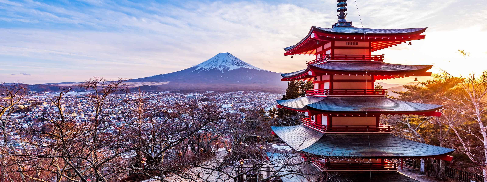
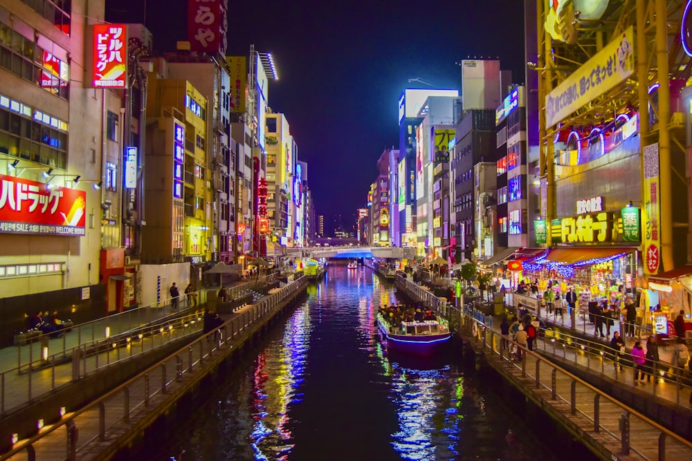
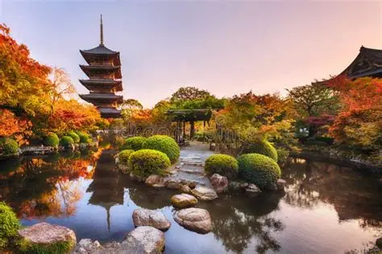

O Japão é um arquipélago fascinante onde a tradição milenar e a tecnologia de ponta coexistem em uma harmonia quase poética. Conhecido como a "Terra do Sol Nascente", o país encanta pela preservação de seus templos antigos, cerimônias de chá e jardins zen, ao mesmo tempo em que lidera o mundo com metrópoles vibrantes como Tóquio, trens de alta velocidade e uma cultura pop influente. Além da estética impecável e da culinária refinada, a sociedade japonesa é profundamente admirada por seus valores de respeito, disciplina e coletividade, refletidos em cidades extremamente organizadas e seguras que oferecem uma experiência sensorial única entre o passado sagrado e o futuro futurista.
O Japão é um local que sempre chamou minha atenção. isso ocorre principalmente por causa da minha conexção cuktural com o Japão, além de eu ter familia japônesa, da qual eu quero muito poder conhecer melhor.


